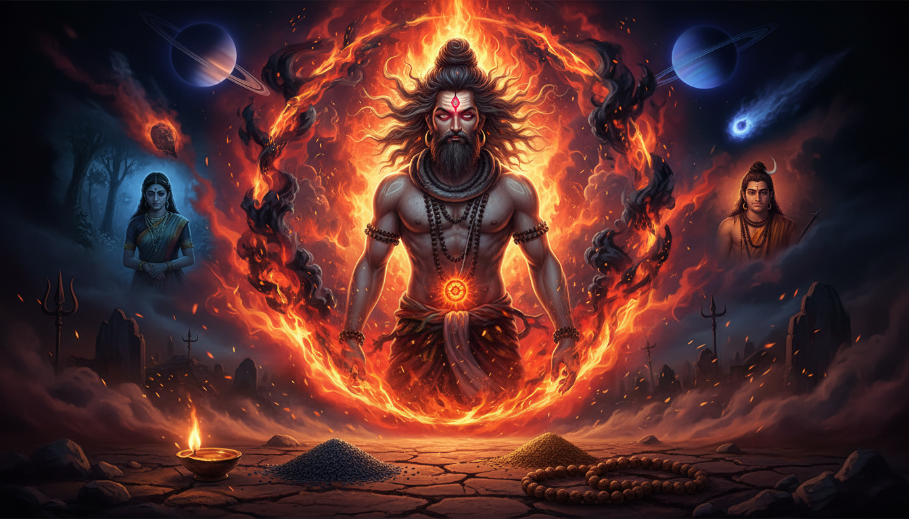

1. शिव के क्रोध से जन्मा ऋषि
ब्रह्मांडीय चक्र के अंतिम प्रहर में, जब देवता और राक्षस तीनों लोकों पर अधिकार के लिए संघर्ष कर रहे थे, एक क्षण ऐसा आया जब भगवान शिव के क्रोध से एक ऐसे ऋषि का जन्म हुआ जिनका नाम वैदिक परंपरा में भय और श्रद्धा दोनों के साथ लिया जाता है। राक्षस जलंधर के अहंकार और देवताओं के धोखे से क्रोधित होकर शिव ने अपना तीसरा नेत्र खोला - उस विनाशकारी अग्नि का स्रोत जो सृष्टि को भस्म कर देता है। उसी ज्वाला से एक चिंगारी पृथ्वी पर गिरी और मानव रूप धारण किया। वह रूप था दुर्वासा - वे ऋषि जो ईश्वरीय क्रोध की परिवर्तनकारी शक्ति के जीवंत प्रतीक हैं।

नाम "दुर्वासा" स्वयं उनके स्वभाव का वर्णन करता है। यह "दुर" (कठिन) और "वासा" (साथ रहना) से बना है, जिसका अर्थ है "जिसके साथ रहना कठिन है।" लेकिन यह कठिनाई मात्र स्वभाव की चिड़चिड़ापन नहीं है। दुर्वासा उस सामग्रिक सिद्धांत का प्रतिनिधित्व करते हैं कि नियंत्रणहीन क्रोध विनाश करता है, लेकिन नियंत्रित क्रोध परिवर्तन लाता है। वे क्रोध सिद्धि - क्रोध पर गुप्त विजय, ईश्वरीय असंतोष को एक आध्यात्मिक शक्ति के रूप में उपयोग करने की कला - के जीते-जागते प्रतीक हैं।
वैदिक ज्योतिष में, यह उत्पत्ति कथा सीधे तौर पर शनि (Saturn) की ग्रहीय ऊर्जा से जुड़ती है - कर्मिक न्याय, ईश्वरीय कोप, और धीमी लेकिन अनिवार्य परिवर्तन के ग्रह के साथ। जैसे शिव का तीसरा नेत्र विनाशकारी अग्नि छोड़ता है जो अंततः नवीनीकरण का मार्ग प्रशस्त करती है, वैसे ही शनि की गोचर यात्रा व्यक्ति के जीवन में कर्मिक अशुद्धियों को कठिनाइयों के माध्यम से जला देती है। दुर्वासा इस प्रकार शिव की शनि ऊर्जा के मानव वाहक हैं - वे ऋषि जो श्राप देते हैं जो वास्तव में दंड के रूप में प्रच्छन्न कर्मिक सुधार हैं।
2. श्राप जिन्होंने नियति को आकार दिया: शकुंतला, अंबरीष और कृष्ण
दुर्वासा की कथा उनके द्वारा दिए गए श्रापों के माध्यम से कही जाती है, और प्रत्येक श्राप प्रावीण ज्योतिष का एक उत्कृष्ट पाठ है जो पौराणिक कथा के रूप में प्रच्छन्न है। उनका सबसे प्रसिद्ध श्राप शकुंतला पर पड़ा, जो महर्षि कण्व की गोधन पुत्री थीं। अपने प्रिय राजा दुष्यंत के विचारों में खोई हुई शकुंतला ने दुर्वासा का उचित आतिथ्य नहीं किया जब वे आश्रम पहुंचे। ऋषि ने श्राप दिया कि जिस व्यक्ति के विचार में वह लीन थीं, वह उन्हें भूल जाएगा। यह श्राप - एक क्षण की विक्षिप्त उपेक्षा से उत्पन्न - भरत वंश के संघर्षों का मूल बन गया और कालिदास के अमर नाटक अभिज्ञानशाकुन्तलम् का केंद्रीय आख्यान बना।
ज्योतिषीय दृष्टि से, यह श्राप श्राप दोष के सिद्धांत को दर्शाता है - वह कर्मिक बाधा जो तब उत्पन्न होती है जब पवित्र कर्तव्यों को सांसारिक आसक्ति के कारण उपेक्षित किया जाता है। शकुंतला का विक्षिप्त मन पीड़ित चंद्रमा (Chandra) का प्रतिनिधित्व करता है - वह ग्रह जो भावनात्मक संतुलन और ग्रहणशीलता को नियंत्रित करता है। जब चंद्रमा शनि या राहु से पीड़ित होता है, तो व्यक्ति महत्वपूर्ण क्षणों में भावनात्मक रूप से अनुपस्थित हो जाता है, जिससे कर्मिक परिणाम उत्पन्न होते हैं। उपाय चंद्र शांति अनुष्ठान में निहित है - चंद्रमा को शांत करने वाली प्रथाएँ जो भावनात्मक उपस्थिति और ग्रहणशीलता को पुनर्स्थापित करती हैं।
अंबरीष पर पड़ा श्राप सबसे अधिक प्रकाश डालता है। राजा अंबरीष एकादशी व्रत रख रहे थे जब दुर्वासा वहां पहुंचे। व्रत के समय के बंधन के कारण, राजा को द्वादशी के सूर्योदय के ठीक समय पर व्रत तोड़ना था। दुर्वासा, जिन्हें यह अपमान जान पड़ा, वे भोजन से पहले स्नान करने गए, और जब लौटे तो पाया कि अंबरीष ने जल पीकर व्रत तोड़ दिया है। क्रोध में आकर दुर्वासा ने राजा को नष्ट करने के लिए सुदर्शन चक्र को आह्वान किया। लेकिन अंबरीष की भक्ति ने सुदर्शन चक्र को उनकी रक्षा के लिए बुला लिया, और चक्र दुर्वासा पर ही मुड़ गया। ऋषि भागकर ब्रह्मा, फिर शिव, फिर विष्णु के पास गए, लेकिन कोई भी उन्हें बचा नहीं सका। केवल जब उन्होंने अंबरीष के समक्ष आत्मसमर्पण किया और क्षमा मांगी, तब चक्र वापस लिया गया।
यह कथा क्रोध सिद्धि का सबसे गहन रहस्य प्रकट करती है: ईश्वरीय क्रोध, शुद्ध भक्ति के सामने, झुकना पड़ता है। सुदर्शन चक्र - विष्णु का अस्त्र - अपने सबसे रक्षात्मक रूप में सूर्य-सूर्य ऊर्जा का प्रतिनिधित्व करता है। जब किसी व्यक्ति का सूर्य मजबूत और अपीड़ित होता है, तो कोई भी श्राप उनके आभीय कवच को भेद नहीं सकता। यह सूर्य कवच प्रयोग का आधार है - सौर ढाल अनुष्ठान जो श्राप, बुरी नज़र और मानसिक आक्रमणों से रक्षा करता है।
तीसरा महान श्राप स्वयं कृष्ण पर पड़ा। दुर्वासा द्वारका आए और कृष्ण तथा रानी रुक्मिणी ने उनका आतिथ्य सत्कार किया। दुर्वासा ने उन्हें एक विशेष लेप शरीर पर लगाने और फिर भोजन करने को कहा। कृष्ण और रुक्मिणी ने आज्ञा मानी लेकिन पैरों पर लेप लगाना भूल गए। दुर्वासा ने घोषणा की कि चूंकि उनके पैर असुरक्षित थे, इसलिए कृष्ण का संपूर्ण वंश पैरों के माध्यम से नष्ट होगा - अर्थात उन स्थानों के माध्यम से जहां वे चले गए। यह श्राप वर्षों बाद तब साकार हुआ जब एक शिकारी का बाण कृष्ण के पैर में लगा, उनका पार्थिव अवतार समाप्त हुआ और द्वारका जलमग्न हो गई।
यह श्राप प्रावीण ज्योतिष में राहु-केतु अक्ष से जुड़ता है। पैर केतु का क्षेत्र हैं - मोक्ष कारक, मुक्ति का बिंदु। जब केतु पीड़ित होता है, तो व्यक्ति की आध्यात्मिक नींव टूट जाती है, और सबसे शक्तिशाली वंश भी गिर सकते हैं। इस प्रकार की बाधा का उपाय केतु शांति अनुष्ठान में निहित है जो पवित्र पैर-धुलाई समारोहों में किया जाता है, विशेष रूप से रामेश्वरम् और गया में।
3. ईश्वरीय क्रोध की गुप्त रचना: क्रोध अग्नि और मणिपुर चक्र
दुर्वासा की शक्ति केवल भावनात्मक क्रोध से नहीं आती। यह सूक्ष्म शरीर की ऊर्जा रचना की गहन समझ से आती है। वैदिक गुप्त परंपरा में, क्रोध एक भावना नहीं है - यह अग्नि का परिवर्तनकारी रूप है। जब यह अग्नि नियंत्रित नहीं होती, तो यह उसे जला देती है जो इसे वहन करता है। जब इसे साधना के माध्यम से नियंत्रित किया जाता है, तो यह एक अस्त्र बन जाती है जो नियति को पुनर्निर्मित कर सकता है।
क्रोध को नियंत्रित करने वाला ऊर्जा केंद्र मणिपुर चक्र है - नाभि में स्थित सौर जाल। यह चक्र अग्नि तत्व के अधीन है और अपने दृढ़ रूप में सूर्य (सूर्य) और अपने रक्षात्मक रूप में मंगल (मंगल) से जुड़ा है। दुर्वासा की साधना में इस चक्र को सक्रिय और नियंत्रित करना शामिल था, जिसे क्रोध अग्नि प्राणायाम - ईश्वरीय कोप की श्वास - कहा जाता है।
यह प्रथा, जो नाथ संप्रदाय और अघोरी परंपरा के मौखिक ज्ञान में संरक्षित है, इस प्रकार कार्य करती है: साधक श्मशान या तीन सड़कों के चौराहे (त्रिकोण - भैरव से जुड़ा सीमांत स्थान) पर बैठता है। दक्षिण की ओर मुख करके, साधक नाभि पर एक काली ज्वाला की कल्पना करता है जो प्रत्येक श्वास के साथ ऊपर उठती है। श्वास रोकने (कुंभक) पर, ज्वाला को संकुचित किया जाता है और एक विशेष संकल्प की ओर मोड़ा जाता है। दाहिनी नासिका (पिंगला नाड़ी) से श्वास छोड़ते हुए, ज्वाला को एक मानसिक प्रक्षेपक के रूप में मुक्त किया जाता है। यह अप्रशिक्षितों के लिए नहीं है - इसके लिए वर्षों की शुद्धि और गुरु का मार्गदर्शन आवश्यक है, क्योंकि अनुचित रूप से निर्देशित क्रोध अग्नि का प्रतिघात साधक के अपने तंत्रिका तंत्र को नष्ट कर सकता है।
प्रावीण ज्योतिष में, यह प्रथा मंगल श्राप निवारण से मेल खाती है - अग्नि अनुष्ठानों के माध्यम से मंगल संबंधी श्रापों का विसर्जन। जब जन्म पत्रिका में मंगल पीड़ित होता है (विशेष रूप से 8वें भाव में या राहु के साथ संयुक्त), तो व्यक्ति अभिव्यक्त न किए गए क्रोध को वहन करता है जो दुर्घटनाओं, शल्य चिकित्साओं, या अचानक संघर्षों के रूप में प्रकट होता है। उचित मार्गदर्शन में किया गया क्रोध अग्नि प्राणायाम इस विनाशकारी ऊर्जा को रक्षात्मक शक्ति में परिवर्तित करता है।
4. दुर्वासा कवच: श्रापों के विरुद्ध सुरक्षात्मक ढाल
दुर्वासा परंपरा के सबसे गोपनीय रहस्यों में से एक है दुर्वासा कवच - एक सुरक्षात्मक ढाल जिसे स्वयं ऋषि ने उन लोगों की रक्षा के लिए रचा था जिन्होंने उनसे क्षमा मांगी थी। अन्य कवचों के विपरीत जो कल्याणकारी देवताओं का आह्वान करते हैं, दुर्वासा कवच ऋषि की स्वयं की ज्वालामयी ऊर्जा को एक सुरक्षात्मक अवरोध के रूप में आह्वान करता है, उनकी श्राप-देने की शक्ति को श्राप-निवारक कवच में परिवर्तित करता है।
कवच इस प्रकार पठन किया जाता है: साधक दुर्वासा को अपने समक्ष खड़े होते हुए कल्पना करता है, उनका तीसरा नेत्र जलता हुआ, उनका दाहिना हाथ नियंत्रण के मुद्रा (क्रोध मुद्रा) में उठा हुआ। कवच का प्रत्येक श्लोक शरीर के विभिन्न अंगों के चारों ओर ज्वालामयी सुरक्षा की एक परत स्थापित करता है:
पहला श्लोक सिर की रक्षा करता है, शिव के तीसरे नेत्र को एक सुरक्षात्मक मुकुट के रूप में आह्वान करता है। यह सहस्रार चक्र से जुड़ता है और 12वें भाव में सूर्य की बाधाओं के उपाय के रूप में उपयोग किया जाता है, जो सिरदर्द, निद्रा रहितता और आध्यात्मिक विच्छेद का कारण बनते हैं। दूसरा श्लोक नेत्रों की रक्षा करता है, बुरी नज़र (नज़र दोष) के विरुद्ध अग्नि को एक अवरोध के रूप में आह्वान करता है। यह दूसरे भाव में राहु की बाधाओं के लिए निर्धारित है, जो डाह और ईर्ष्या के कारण आर्थिक हानि उत्पन्न करते हैं। तीसरा श्लोक कंठ की रक्षा करता है, दुर्वासा के वाक्शक्ति का आह्वान करता है - वही वाणी जिसने श्राप दिए जिन्होंने वंशों को पुनर्निर्मित किया। यह छठे भाव में बुध की बाधाओं के लिए उपयोग किया जाता है, जहां वाक्य संघर्ष का स्रोत बन जाते हैं।
संपूर्ण कवच में बारह श्लोक हैं, जन्म पत्रिका के बारह भावों में से प्रत्येक के लिए एक। निरंतर 41 दिनों तक प्रतिदिन संपूर्ण कवच का पठन करने की प्रथा को दुर्वासा कवच साधना कहा जाता है, और इसे वैदिक गुप्त परंपरा में मानसिक आक्रमणों, भूत प्रेत बाधाओं और कर्मिक श्रापों के विरुद्ध सबसे शक्तिशाली सुरक्षाओं में से एक माना जाता है।
5. आंशिक व्रत का रहस्य: दुर्वासा और एकादशी संबंध
अंबरीष और दुर्वासा की कथा वैदिक अनुष्ठान तकनीक की एक छुपी परत प्रकट करती है: उपायों की समय सटीकता। दुर्वासा का क्रोध व्रत के कार्य से नहीं, बल्कि सटीक समय-सीमा के उल्लंघन से उत्पन्न हुआ। वैदिक ज्योतिष में, उपाय की सफलता केवल इस पर निर्भर नहीं करती कि आप क्या करते हैं, बल्कि इस पर भी कि आप कब करते हैं। यह मुहूर्त का सिद्धांत है - चुनावी समय जो अनुष्ठान कार्य को ग्रहीय ऊर्जा के साथ संरेखित करता है।
अंबरीष द्वारा रखा गया एकादशी व्रत चंद्रमा-शनि अक्ष से जुड़ा है। एकादशी चंद्र क्रम के 11वें तिथि को आती है, जब चंद्रमा अपनी सबसे कमजोर स्थिति में होता है - सूर्य के पोषण प्रभाव से दूर और शनि की प्रतिबंधक ऊर्जा के प्रति संवेदनशील। व्रत पाचन तंत्र को शुद्ध करके चंद्रमा को मजबूत करने के लिए डिज़ाइन किया गया है (जो वैदिक ज्योतिष में चंद्रमा के अधीन है)। गलत समय पर व्रत तोड़ना इस संरेखण को बाधित करता है और व्रत न रखने से अधिक कर्मिक अशांति पैदा कर सकता है।
दुर्वासा का अंबरीष पर क्रोध इस प्रकार समय सटीकता के उल्लंघन के विरुद्ध एक सामग्रिक विरोध था। लेकिन गहन रहस्य यह है कि दुर्वासा स्वयं प्रावीण ज्योतिष में आंशिक व्रत उपायों के संरक्षक ऋषि हैं। दुर्वासा उपवास एक कम ज्ञात व्रत प्रथा है जिसमें साधक केवल जल और तुलसी पत्तियों का सेवन एक दिन के लिए करता है, विशेष रूप से मंगलवार (मंगलवार - मंगल का दिन) को जब मंगल जन्म चंद्रमा से 8वें भाव में गोचर कर रहा हो। यह व्रत मांगलिक दोष या 8वें भाव में मंगल की बाधा वाले व्यक्तियों के लिए निर्धारित है, और इसे कहा जाता है कि यह दुर्घटनाओं, शल्य चिकित्साओं और अचानक हिंसा के कर्मिक बीजों को जला देता है।
यह प्रथा मानक एकादशी व्रत से एक महत्वपूर्ण तरीके से भिन्न है: दुर्वासा उपवास में साधक को व्रत के दिन भर नियंत्रित क्रोध की स्थिति बनाए रखनी होती है। क्रोध नहीं, बल्कि एक केंद्रित, निर्देशित तीव्रता - वही ऊर्जा जो दुर्वासा वहन करते थे। यह नियंत्रित क्रोध किसी व्यक्ति की ओर नहीं, बल्कि उस कर्मिक पैटर्न की ओर निर्देशित होता है जिसे विसर्जित किया जा रहा है। साधक कर्मिक पैटर्न को एक अंधेरे रस्सी के रूप में कल्पना करता है जो उन्हें बाधा से जोड़ती है, और क्रोध अग्नि का उपयोग करके उसे काटता है।
6. दुर्वासा के तीन लोक: त्रिलोक संचारी और ग्रह उपचार
नारद की भांति, दुर्वासा भी त्रिलोक संचारी थे - वे तीनों लोकों (भू, भुव, और स्वर्ग) के बीच स्वतंत्र रूप से विचरण कर सकते थे। लेकिन जहां नारद भक्ति फैलाने यात्रा करते थे, दुर्वासा कर्मिक सुधार सौंपने यात्रा करते थे। उनकी यात्राएँ एक विशिष्ट पैटर्न का अनुसरण करती हैं जो नवग्रह उपचार अनुक्रम से मेल खाती हैं।
जब दुर्वासा पाताल (अधोलोक) में उतरते थे, वे राहु और केतु को संबोधित कर रहे होते थे - छाया ग्रह जो भूमिगत क्षेत्रों को नियंत्रित करते हैं। उनकी पृथ्वी (भू) पर यात्राएँ शनि और मंगल को संबोधित करती थीं - कर्म और संघर्ष के ग्रह। उनके स्वर्ग (स्वर्ग) में आरोहण गुरु और शुक्र को संबोधित करते थे - ईश्वरीय कृपा और आध्यात्मिक ज्ञान के ग्रह। यह त्रिस्तरीय दृष्टिकोण त्रिलोक शांति प्रयोग का आधार है - एक उपचारात्मक अनुष्ठान जो तीनों क्षेत्रों की बाधाओं को एक साथ संबोधित करता है।
अनुष्ठान इस प्रकार कार्य करता है: पहले दिन, साधक पीपल वृक्ष को काले तिल और सरसों का तेल अर्पित करता है जबकि शनि बीज मंत्र का जाप करता है - यह पाताल (अधोलोक) की बाधाओं को संबोधित करता है जो राहु, केतु और शनि से संबंधित हैं। दूसरे दिन, साधक शिव लिंग को लाल जासूदा फूल और चंदन लेप अर्पित करता है जबकि मंगल बीज मंत्र का जाप करता है - यह भू (पृथ्वी) की बाधाओं को संबोधित करता है जो मंगल और सांसारिक संघर्षों से संबंधित हैं। तीसरे दिन, साधक विष्णु देवता को पीले चम्पा फूल और शुद्ध घी अर्पित करता है जबकि गुरु बीज मंत्र का जाप करता है - यह स्वर्ग (स्वर्ग) की बाधाओं को संबोधित करता है जो गुरु और शुक्र से संबंधित हैं।
यह तीन-दिवसीय अनुष्ठान, चंद्रमा के कृष्ण पक्ष (वद्रे पक्ष) के दौरान किया जाता है, दुर्वासा परंपरा में सबसे व्यापक उपचारात्मक प्रथाओं में से एक माना जाता है। यह जटिल कर्मिक पैटर्नों के मूल कारण को संबोधित करता है जो जन्म पत्रिका में कई समवर्ती बाधाओं के रूप में प्रकट होते हैं।
7. अघोरी संबंध: दुर्वासा और श्मशान क्रोध अनुष्ठान
दुर्वासा को अघोरी परंपरा के आध्यात्मिक पूर्वजों में से एक माना जाता है - वे भयंकर तपस्वी जो श्मशान में साधना करते हैं और अस्तित्व के सबसे निषिद्ध पहलुओं को मुक्ति के मार्ग के रूप में अपनाते हैं। यह संबंध उनकी साझा समझ में निहित है कि परिवर्तन के लिए पुराने का विनाश आवश्यक है, और यह विनाश क्रोध अग्नि का कार्य है - ईश्वरीय कोप की अग्नि।
श्मशान क्रोध अनुष्ठान एक कम ज्ञात अघोरी प्रथा है जिसे दुर्वासा वंश से जोड़ा जाता है। यह अमावस्या (नया चंद्रमा) के दौरान श्मशान में आधी रात को किया जाता है, जब शनि-केतु ऊर्जा अपने चरम पर होती है। साधक चिता के सामने उत्तर दिशा की ओर मुख करके बैठता है और श्मशान की लकड़ी से प्रज्वलित अग्नि में घी, काली उड़द दाल और सरसों के बीज अर्पित करता है। जैसे-जैसे अर्पण जलते हैं, साधक क्रोध बीज मंत्र का जाप करता है - एक ध्वनि सूत्र जो अग्नि तत्व के विनाशकारी पहलू को सक्रिय करता है।
यह अनुष्ठान श्रापित योग के सबसे गंभीर मामलों के लिए निर्धारित है - वह कर्मिक संयोजन जो तब बनता है जब शनि और राहु (या शनि और मंगल) जन्म पत्रिका के एक ही भाव में संयुक्त होते हैं। श्रापित योग एक ऐसे जीवन का निर्माण करता है जो अटकलों, विश्वासघातों और विफलताओं से भरा होता है जिनका कोई तार्किक कारण नहीं होता। श्मशान क्रोध अनुष्ठान कहा जाता है कि संचित नकारात्मक कर्म को परिवर्तन की अग्नि में अर्पित करके कर्मिक रज्जु को जड़ से काट देता है।
अनुष्ठान को अत्यंत सावधानी से किया जाना चाहिए। साधक को पहले 21-दिवसीय शुद्धि अवधि पूरी करनी होती है जिसमें शिव लिंग पर प्रतिदिन दुग्ध अभिषेक, महा मृत्युंजय मंत्र का 108 बार जाप, और कठोर शाकाहारी आहार शामिल है। इस शुद्धि के बिना, अनुष्ठान की ऊर्जा प्रतिघात करके हानि पहुंचा सकती है।
8. दुर्वासा परंपरा से आयुर्वेदिक उपाय
दुर्वासा की अग्नि तत्व पर विजय आयुर्वेद के माध्यम से भौतिक शरीर तक विस्तृत होती है। आयुर्वेदिक ढांचे में, क्रोध पित्त दोष की अधिकता है - वह अग्नि-जल महाभूत जो पाचन, परिवर्तन और चयापचय को नियंत्रित करता है। अनियंत्रित क्रोध ओजस (शरीर के महत्वपूर्ण रस) को जला देता है, तंत्रिका तंत्र को क्षीण करता है, और सूजन की स्थितियाँ उत्पन्न करता है। लेकिन नियंत्रित क्रोध - क्रोध सिद्धि - वास्तव में पाचन अग्नि को मजबूत करता है और शरीर की परिवर्तन क्षमता को बढ़ाता है।
दुर्वासा आयुर्वेदिक परंपरा दमित या अनियंत्रित क्रोध से उत्पन्न पित्त असंतुलन के लिए विशिष्ट उपचार निर्धारित करती है:
त्रिफला और नीम - त्रिफला (तीन-फल आयुर्वेदिक सूत्र) और ताज़ी नीम पत्तियों का संयोजन, सुबह खाली पेट लेने पर, कहा जाता है कि यह अभिव्यक्त न किए गए क्रोध की संचित गर्मी को यकृत और पित्ताशय से बाहर निकालता है। यह उपाय विशेष रूप से 5वें भाव में सूर्य या 4थे भाव में मंगल की बाधाओं वाले व्यक्तियों के लिए निर्धारित है, जो यकृत सूजन और भावनात्मक चंचलता उत्पन्न करते हैं।
ब्राह्मी तेल सिर मालिश - सूर्यास्त से पहले ब्राह्मी-युक्त नारियल तेल से सिर की मालिश करना मणिपुर चक्र को शीतल करने और क्रोध अग्नि को शांत करने के लिए निर्धारित है। यह प्रथा शनि वापसी (जब शनि जन्म चंद्रमा राशि में गोचर करता है) का अनुभव कर रहे व्यक्तियों के लिए अनुशंसित है, क्योंकि यह गोचर अक्सर गहराई से बैठे क्रोध और हताशा को जागृत करता है।
अश्वगंधा और शतावरी - अश्वगंधा (विथेनिया सोम्निफेरा) और शतावरी (एस्परेगस रेसेमोसस) चूर्ण का समान भाग संयोजन, रात में गर्म दूध के साथ लेने पर, अग्नि तत्व को संतुलित करते हुए तंत्रिका तंत्र को पोषित करता है। यह उपाय दुर्वासा उपवास के बाद के लिए निर्धारित है, जो तीव्र ऊर्जा प्रथा से शरीर को सहायता करता है।
केसर और इलायची जल - रात भर एक लीटर जल में तीन केसर के धागे और दो हरी इलायची की फलियाँ भिगोकर, फिर अगले दिन धीरे-धीरे घूंट लेने पर, पीड़ित मंगल की ज्वालामयी ऊर्जा को शांत करने के लिए कहा जाता है। यह एक दैनिक प्रथा है जो मांगलिक दोष वाले व्यक्तियों के लिए अनुशंसित है जो दीर्घकालिक चिड़चिड़ापन और रिश्तों में संघर्ष का अनुभव करते हैं।
9. 2026-2027 ग्रह गोचर संबंध: मीन में शनि और दुर्वासा ऊर्जा
2026 के अंत से 2027 तक की अवधि एक अद्वितीय ग्रहीय संरेखण वहन करती है जो दुर्वासा प्रथाओं को विशेष रूप से प्रभावी बनाती है। मीन राशि में शनि गोचर (2027 की शुरुआत में अपेक्षित) राशिचक्र के अंतिम राशि में शनि का प्रवेश है - विसर्जन, आध्यात्मिकता और कर्मिक समापन की राशि। यह गोचर दुर्वासा ऊर्जा को बढ़ाता है क्योंकि शनि और मीन दोनों कर्मिक निपटारे और आध्यात्मिक परिवर्तन के विषयों को नियंत्रित करते हैं।
जब शनि मीन में प्रवेश करता है, तो यह प्राकृतिक राशिचक्र के 12वें भाव के विषयों को सक्रिय करता है - हानि, मुक्ति, विदेशी भूमि और अवचेतन पैटर्न। जन्म शनि बाधाओं वाले व्यक्तियों के लिए (विशेष रूप से 8वें या 12वें भाव में शनि), यह गोचर गहराई से दबे कर्मिक पैटर्नों के उभरने को जन्म दे सकता है जो श्राप की तरह महसूस होते हैं - अकारण बाधाएँ, अचानक हानियाँ और आध्यात्मिक संकट। दुर्वासा उपचारात्मक प्रथाएँ विशेष रूप से इस प्रकार के कर्मिक उभार के लिए डिज़ाइन की गई हैं।
इसके अतिरिक्त, 2026-2027 तक सिंह में केतु गोचर सूर्य की प्राकृतिक राशि के साथ एक घर्षण बिंदु उत्पन्न करता है। सिंह ईश्वरीय अधिकार की राशि है, और केतु की उपस्थिति वहां पहचान और अधिकार का एक आध्यात्मिक संकट उत्पन्न करती है - वही संकट जो दुर्वासा ने साकार किया। जन्म सूर्य बाधाओं वाले लोग इस गोचर को अधिकार वाले व्यक्तियों के साथ टकराव, पद की हानि, या आत्म-बोध की चुनौतियों के रूप में अनुभव कर सकते हैं। सूर्य कवच प्रयोग और दुर्वासा कवच पाठ इस गोचर के लिए प्राथमिक उपाय हैं।
मीन में शनि और सिंह में केतु का संयोजन एक द्वि-अक्षीय बाधा उत्पन्न करता है जो दुर्वासा पौराणिक कथा को प्रतिबिंबित करता है: मीन में शनि कर्मिक बाढ़ का प्रतिनिधित्व करता है (जैसे श्रापों ने नियतियों को पुनर्निर्मित किया), जबकि सिंह में केतु अहंकार के विघटन का प्रतिनिधित्व करता है (जैसे दुर्वासा का उन लोगों के साथ टकराव जिनमें अभिमान था)। त्रिलोक शांति प्रयोग, इस गोचर अवधि के दौरान किया गया, दोनों अक्षों को एक साथ संबोधित करता है।
10. दुर्वासा पंचांग: पंच-स्तरीय श्राप विसर्जन प्रणाली
दुर्वासा परंपरा में सबसे व्यापक उपचारात्मक प्रणाली दुर्वासा पंचांग है - कर्मिक श्रापों और बाधाओं को विसर्जित करने की पंच-स्तरीय दृष्टिकोण। प्रत्येक स्तर पंच महाभूतों में से एक के अनुरूप है और एक विशिष्ट प्रकार के कर्मिक पैटर्न को संबोधित करता है:
स्तर 1 - पृथ्वी: यह स्तर भूमि, संपत्ति और भौतिक स्थिरता से संबंधित श्रापों को संबोधित करता है। उपाय में दुर्वासा कवच का पाठ करते हुए अपनी संपत्ति के चार कोनों और केंद्र में पाँच लौह कीलें गाड़ना शामिल है। यह 4थे भाव में शनि की बाधाओं के लिए निर्धारित है, जो आवास और संपत्ति मामलों में अस्थिरता उत्पन्न करते हैं।
स्तर 2 - जल: यह स्तर भावनाओं, रिश्तों और प्रवाह से संबंधित श्रापों को संबोधित करता है। उपाय में सात लगातार शनिवार को काले तिल मिले जल को बहती हुई नदी या समुद्र में अर्पित करना शामिल है। यह 8वें भाव में चंद्रमा या 6ठे भाव में शुक्र की बाधाओं के लिए निर्धारित है, जो भावनात्मक अशांति और रिश्ता संघर्ष उत्पन्न करते हैं।
स्तर 3 - अग्नि: यह स्तर क्रोध, हिंसा और विनाश से संबंधित श्रापों को संबोधित करता है। उपाय 21 लगातार दिनों तक सूर्यास्त पर किया गया क्रोध अग्नि प्राणायाम है, जिसके बाद होम अग्नि में घी अर्पित करना है। यह 8वें भाव में मंगल या पहले भाव में राहु की बाधाओं के लिए निर्धारित है।
स्तर 4 - वायु: यह स्तर वाक्य, संवाद और मानसिक पैटर्न से संबंधित श्रापों को संबोधित करता है। उपाय में सात सप्ताह तक प्रति सप्ताह एक दिन पूर्ण मौन (मौन) रखना शामिल है, जिसमें दुर्वासा कवच का केवल मानसिक पाठ किया जाता है। यह 8वें भाव में बुध या दूसरे भाव में केतु की बाधाओं के लिए निर्धारित है।
स्तर 5 - आकाश: यह स्तर नियति, आध्यात्मिक अवरोध और कर्मिक अंधता से संबंधित श्रापों को संबोधित करता है। उपाय में दुर्वासा के निराकार रूप का ध्यान - ऋषि को बिना आकार की शुद्ध अग्नि के रूप में कल्पना करना - 40 दिनों तक प्रतिदिन 40 मिनट तक किया जाता है। यह 8वें भाव में गुरु या 9वें भाव में राहु की बाधाओं के लिए निर्धारित है, जो आध्यात्मिक संकट और विश्वास की हानि उत्पन्न करते हैं।
11. दार्शनिक रहस्य: परिवर्तन के द्वारपाल के रूप में क्रोध
दुर्वासा परंपरा का सबसे गहन शिक्षण श्रापों या उपायों के बारे में नहीं है। यह क्रोध के स्वभाव के बारे में है। सांख्य दर्शन के ढांचे में जो वैदिक ज्योतिष का आधार है, क्रोध एक नकारात्मक भावना नहीं है जिसे दबाया जाना चाहिए। यह रजस् का सबसे संकेंद्रित रूप है - प्रकृति की सक्रिय, परिवर्तनकारी गुणवत्ता जो जो स्थिर है उसे तोड़ती है और जो नया है उसके लिए स्थान बनाती है।
दुर्वासा इस सत्य का प्रतिनिधित्व करते हैं कि आध्यात्मिक विकास हमेशा कोमल नहीं होता। कभी-कभी आत्मा को ईश्वरीय कोप की अग्नि की आवश्यकता होती है ताकि जन्मों-जन्मों के संचित कर्म को जलाया जा सके। दुर्वासा द्वारा दिए गए श्राप दंड नहीं थे - वे त्वरण थे। उन्होंने प्राप्तकर्ता को जो वे टाल रहे थे उसका सामना करने, जिन कर्मिक पैटर्नों से वे भाग रहे थे उनका सामना करने, और टकराव की तीव्रता के माध्यम से परिवर्तन करने के लिए बाध्य किया।
यही सिद्धांत वैदिक ज्योतिष में शनि पर भी लागू होता है। शनि एक पाप ग्रह नहीं है - वह कर्मिक आवश्यकता का ग्रह है। उनके गोचर और दृष्टियाँ कठिनाई उत्पन्न करती हैं दंड देने के लिए नहीं, बल्कि परिपक्व करने के लिए। जब शनि जन्म पत्रिका के किसी भाव को पीड़ित करता है, तो वह आत्मा से उस भाव से जुड़े कर्मिक पैटर्नों की ज़िम्मेदारी लेने को कहता है। कठिनाई पाठ्यक्रम है; परिवर्तन स्नातक है।
दुर्वासा सिखाते हैं कि वही सिद्धांत क्रोध पर भी लागू होता है। जब क्रोध उठता है, तो उसे दबाया नहीं जाना चाहिए और न ही उसमें डूबना चाहिए। उसे नियंत्रित किया जाना चाहिए - क्रोध अग्नि प्राणायाम के माध्यम से चैनल किया जाना चाहिए, श्मशान क्रोध अनुष्ठान के माध्यम से अर्पित किया जाना चाहिए, या दुर्वासा पंचांग के माध्यम से विसर्जित किया जाना चाहिए। नियंत्रित क्रोध वह अग्नि बन जाती है जो आत्मा को गढ़ती है। अनियंत्रित क्रोध वह अग्नि बन जाती है जो उसे भस्म कर देती है।
12. व्यावहारिक 41-दिन दुर्वासा साधना गाइड
जो लोग दुर्वासा ऊर्जा के साथ काम करने का आह्वान महसूस करते हैं, उनके लिए यहाँ एक संरचित 41-दिन साधना है जो परंपरा की प्रमुख प्रथाओं को एकीकृत करती है। यह साधना विशेष रूप से शनि गोचर, राहु-केतु अक्ष सक्रियण, या तीव्र कर्मिक उभार की अवधि के दौरान अनुशंसित है:
तैयारी (दिन 1-7): शुद्धि चरण से शुरू करें। सूर्योदय से पहले प्रतिदिन ठंडे जल से स्नान करें। माथे, नाभि और कंठ पर भस्म (पवित्र राख) लगाएँ। प्रतिदिन महा मृत्युंजय मंत्र का 108 बार जाप करें। कठोर शाकाहारी आहार रखें, सभी मसालेदार और किण्वित खाद्य पदार्थों से बचें जो पित्त को बढ़ाते हैं। ज़मीन पर सोएँ। ये प्रथाएँ क्रोध अग्नि प्रथाओं के लिए आवश्यक ऊर्जा पात्र का निर्माण करती हैं।
सक्रियण (दिन 8-21): क्रोध अग्नि प्राणायाम शुरू करें। प्रतिदिन सूर्यास्त पर, एक शांत, अंधेरे कमरे में दक्षिण की ओर मुख करके बैठें। एक घी का दीपक जलाएँ। 21 चक्र प्राणायाम करें: बायीं नासिका से श्वास लेते हुए नाभि से कमल तक काली अग्नि की कल्पना करें, श्वास रोकें और अग्नि को भ्रू मध्य के बीच एक बिंदु में संकुचित करें, दाहिनी नासिका से श्वास छोड़ते हुए अग्नि को एक सुरक्षात्मक गोले के रूप में विकीर्ण होते हुए कल्पना करें। प्राणायाम के बाद, दुर्वासा कवच का एक बार पाठ करें।
एकीकरण (दिन 22-35): त्रिलोक शांति प्रयोग जोड़ें। सोमवार को, पीपल वृक्ष को काले तिल और सरसों का तेल अर्पित करें। मंगलवार को, शिव लिंग को लाल जासूदा अर्पित करें। गुरुवार को, विष्णु देवता को पीले चम्पा फूल अर्पित करें। प्रतिदिन क्रोध अग्नि प्राणायाम और कवच पाठ जारी रखें।
समापन (दिन 36-41): अंतिम चरण में, श्मशान क्रोध अनुष्ठान ध्यान करें (उचित दीक्षा के बिना भौतिक श्मशान यात्रा के बिना)। आधी रात को अंधेरे में बैठें और जिन कर्मिक पैटर्नों को आप विसर्जित करना चाहते हैं उन्हें अपने शरीर से निकलते अंधेरे रस्सियों के रूप में कल्पना करें। क्रोध अग्नि का उपयोग करके प्रत्येक रस्सी को एक-एक करके काटें, प्रत्येक को अग्नि में अर्पित करें। 41वें दिन, घी और काले तिल के साथ अंतिम होम अर्पित करें, और दुर्वासा कवच का 12 बार पाठ करें।
साधना के बाद: सात दिनों तक त्रिफला और नीम लें ताकि कोई शेष गर्मी बाहर निकल जाए। प्रति रात ब्राह्मी तेल सिर पर लगाएँ। एक सप्ताह तक क्रोध-उत्प्रेरक स्थितियों से बचें। साधना के प्रभाव 90 दिनों तक विकसित होते रहेंगे जैसे-जैसे कर्मिक पैटर्न विसर्जित और पुनर्गठित होते हैं।
13. निष्कर्ष: वह अग्नि जो शुद्ध करती है
दुर्वासा ने वह हासिल किया जो कुछ ही ऋषियों ने करने का साहस किया: उन्होंने क्रोध को ही मुक्ति का मार्ग बना दिया। उनका जीवन हमें सिखाता है कि सबसे विनाशकारी भावनाएँ, जब समझी और नियंत्रित की जाएँ, परिवर्तन के सबसे शक्तिशाली उपकरण बन जाती हैं। उनके द्वारा दिए गए श्राप क्रूरता के कार्य नहीं थे - वे कर्मिक शरीर में शल्य चिकित्सा थे, जो आवश्यक था उसे काटते थे ताकि आत्मा चंगा हो सके।
एक ऐसी दुनिया में जो हमें कहती है कि अपने क्रोध को दबाओ, अपने कोप को दवा दो, और अपनी अग्नि को सुन्न करो, दुर्वासा परंपरा एक क्रांतिकारी दृष्टिकोण प्रस्तुत करती है: अग्नि को बुझाओ मत। उसे नियंत्रित करो। उसे क्रोध अग्नि प्राणायाम के माध्य से चैनल करो। उसे दुर्वासा कवच के माध्य से निर्देशित करो। उसे श्मशान क्रोध अनुष्ठान के माध्य से अर्पित करो। उसे उन कर्मिक रज्जुओं के माध्य से जलाओ जो तुम्हें ऐसे पैटर्नों से बांधते हैं जिन्हें तुमने चुना नहीं और ऐसे परिणामों से जिन्हें तुम नहीं चाहते।
ग्रह पटलिख्य लिखते हैं। शनि कठिनाई देते हैं। राहु भ्रम पैदा करता है। मंगल संघर्ष को जलाता है। लेकिन अग्नि - वह अग्नि जो सब कुछ परिवर्तित करती है - वह अग्नि तुम्हारी है। दुर्वासा ने हमें दिखाया कि उसे कैसे उपयोग करें। बाकी तुम्हारे ऊपर है।
तीसरा नेत्र अभी भी जलता है। अग्नि अभी भी गिरती है। और वह ऋषि जो ईश्वरीय कोप से जन्मा, अभी भी तीनों लोकों में विचरता है, अपनी भयंकर कृपा प्रदान करता है प्रत्येक उस व्यक्ति को जो उसे प्राप्त करने का साहस रखता है।
स्रोत
- Durvasa - Wikipedia
- Shakuntala and the Curse of Durvasa - Wikipedia
- Ambarisha and Durvasa - Wikipedia
- Sudarshana Chakra - Wikipedia
- Saturn in Vedic Astrology - AstroSage
- Mars in Vedic Astrology - AstroSage
- Rahu in Vedic Astrology - AstroSage
- Ketu in Vedic Astrology - AstroSage
- Shrapit Yoga Remedies - AstroSage
- Mangal Dosha Remedies - AstroSage
- Maha Mrityunjaya Mantra - Sacred Texts
- Manipura Chakra and Fire Element - Wikipedia
- Aghori Tradition - Wikipedia
- Nath Sampradaya - Wikipedia
- Triphala - Ayurvedic Properties - Wikipedia
- Brahmi - Ayurvedic Herb - Wikipedia
- Ashwagandha - Ayurvedic Properties - Wikipedia
- Saturn Transit in Pisces 2026 - AstroSage
- Ketu Transit in Leo 2026 - AstroSage
- Ekadashi Fast Significance - Wikipedia
- Pitta Dosha and Anger in Ayurveda - Wikipedia
- Sankhya Philosophy - Wikipedia
- Kavacha in Vedic Tradition - Wikipedia
- Tulsi in Hinduism - Wikipedia
- Peepal Tree Sacred Significance - Wikipedia
- Pancha Mahabhuta Five Elements - Wikipedia
- Surya Kavacha and Sun Remedies - AstroSage
- Chandra Beeja Mantra and Moon Remedies - AstroSage
- Abhijnanasakuntalam by Kalidasa - Wikipedia
- Kundalini and Chakra System - Wikipedia
Sources
No source URLs were returned by NotebookLM for this run.